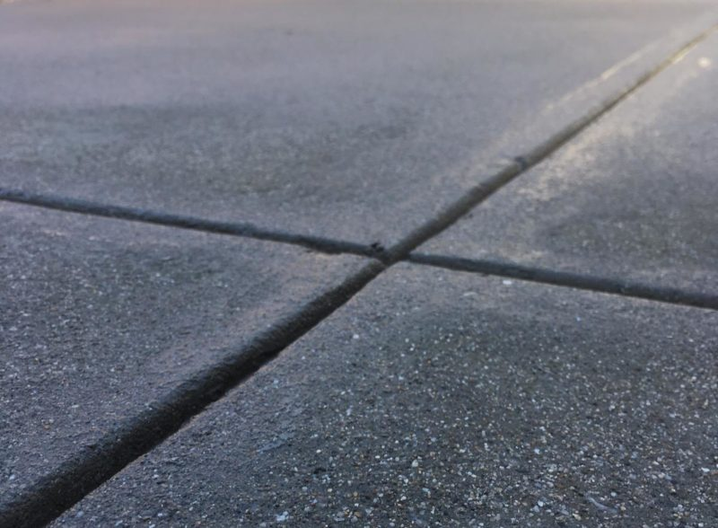
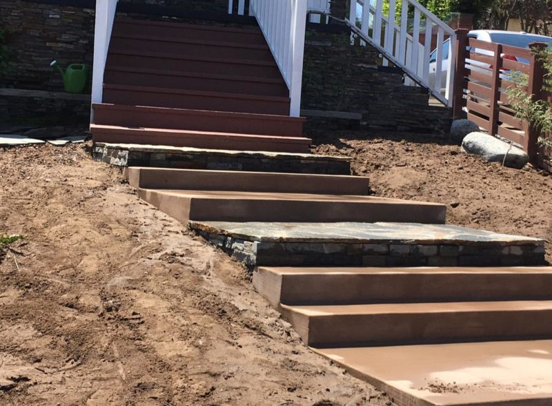
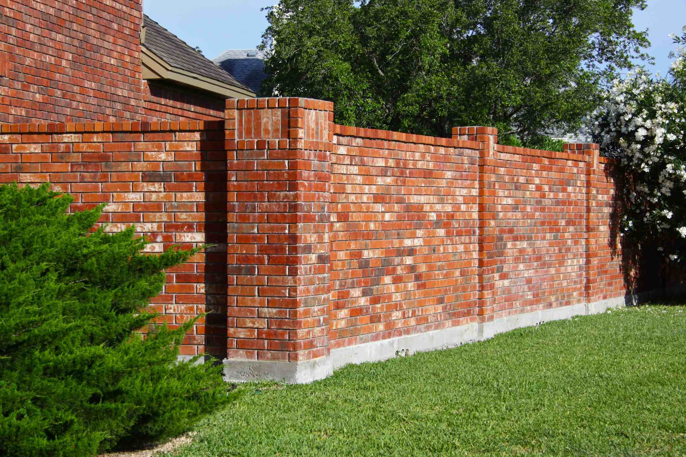
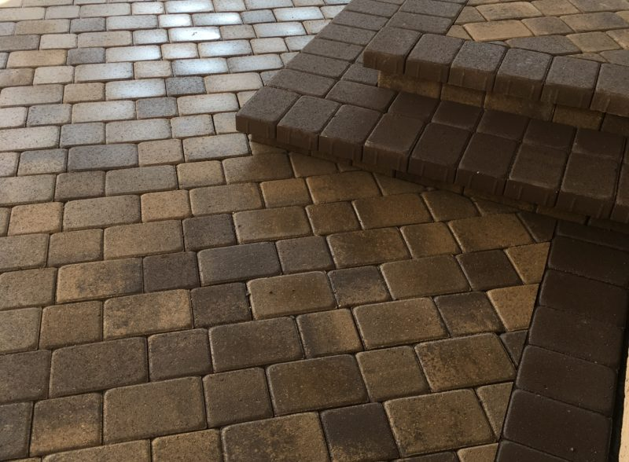
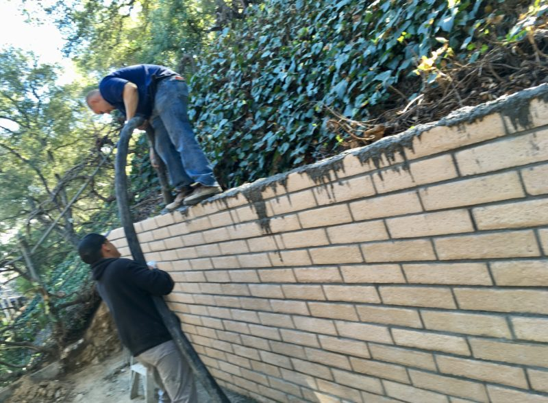
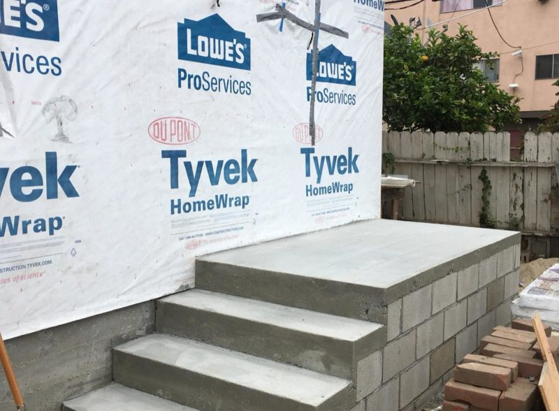

Concrete flatwork
Driveways, patios, sidewalks, city driveway approaches, curb cuts, porches, steps, parking slabs, and garage slabs.
Licensed masonry + concrete · Inglewood / Los Angeles
Bobcat Masonry and Concrete handles residential and commercial concrete and masonry work across Los Angeles, South Bay, Orange County, Ventura County, and Kern County.



Service scope
The job usually starts with a surface, a wall, a stair run, a foundation issue, or a damaged masonry detail.
Driveways, patios, sidewalks, city driveway approaches, curb cuts, porches, steps, parking slabs, and garage slabs.
Brick repair and replacement, tuckpointing, walls, chimneys, fireplaces, churches, schools, and commercial buildings.
Retaining walls, foundations, stairs, block walls, hardscape repair, and alterations.
Stamped concrete, pavers, stucco and plaster, decorative concrete, pool decks, patios, and walkways.
Project archive
Bobcat’s archive includes city-labeled projects for Culver City, Hollywood, Gardena, Burbank, Encino, Studio City, and Torrance. The useful thing is simple: you can see the kind of work before you call.



Trust checks
Contractor trust should be easy to verify. Bobcat publishes its license number, phone, email, service counties, weekday hours, and free-estimate path.
California license number for Bobcat Masonry, listed as masonry by BuildZoom.
The home page describes Bobcat as family owned and operated with more than 20 years of experience.
Published service areas include Los Angeles, Orange, Ventura, and Kern counties, plus South Bay in the home-page copy.
Get a free quote
Use the first call to pin down the surface, site access, repair versus replacement, and whether the work is residential or commercial.